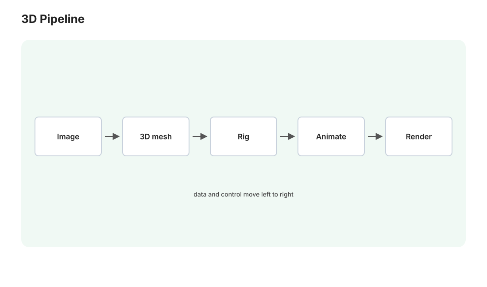

本讲目录
第 21 讲 · 3D、数字人与全本地流水线（收束）
最后一讲三件事：把 3D 生成和数字人这两块拼图补上（都与你的 VRChat 背景直接相关），然后把拓展篇全部模态串成一条从角色图到成品短片的全本地流水线，最后收束整个课程的认知框架。

1. 3D 生成
1.1 表示：三种"存 3D 的方式"
3D 领域连"表示"都没统一，三大流派各霸一方（第 16 讲"表示决定一切"的极端案例）：
- 网格（mesh）：顶点 + 三角面 + 贴图——图形学工业标准，游戏/VRChat/Blender 只认它。生成模型的最终交付格式；
- NeRF（神经辐射场，2020）：用一个 MLP 隐式记录"空间每点向每个方向发什么光"，渲染 = 沿视线积分。质量惊艳但训练渲染都慢，已让位于——
- 3D 高斯泼溅（3DGS，2023）：显式地用几十万个带颜色/透明度/协方差的 3D 高斯椭球拼场景，渲染是光栅化级的实时。当前场景重建的主流表示。
1.2 生成路线：从"绕着画"到"直接生"
路线一 · 多视图扩散 + 重建（2023–24 主流）：先用图像扩散模型（第 02–04 讲的老朋友，微调成"给一张图，画出它的其他视角"）生成 4–6 个视角，再用重建网络把多视图拼成 3D。思路直白，弱点是视角间打架（背面细节前后矛盾）。
路线二 · 原生 3D 潜空间扩散（当前主流）：给 3D 形状本身训一个 VAE（把形状压成 latent 集合），在上面跑扩散——四步框架在第四个模态上原样复现。代表：Hunyuan3D 2.x（形状生成与贴图合成两阶段，开源，你的 ComfyUI 已有原生节点：Hunyuan3Dv2Conditioning、VAEDecodeHunyuan3D、Load3D/Preview3D 等，核实过）与 TRELLIS（微软）。
1.3 实战要点
- 入口：模板浏览器 3D 分区（Hunyuan3D 的 image-to-3D 模板），输入一张主体清晰、背景干净的角色/物体图（第 12–13 讲的产出直接可用；背景不干净先过一遍 rembg——你 Mac 工具链里现成的），输出
.glb网格； - 显存：形状阶段 16GB 可跑（分体/量化版本社区都有）；贴图阶段更吃资源，起步可以只出白模；
- 预期管理：当前 image-to-3D 的产出是"概念模型级"——拓扑不干净（三角面浓汤，不是规整四边面），离 VRChat 可用的绑骨模型还差重拓扑/绑骨等人工工序（Blender 里做）。定位是：手办预览、场景道具、建模起稿——从零建模的起点，不是终点。注意 ComfyUI 里 Tripo/Rodin 那些 3D 节点是付费 API 节点（走 Comfy 账号积分），和本地跑的 Hunyuan3D 是两回事，别混淆。
2. 数字人：让角色开口说话
两个成熟的本地部件（都吃"一张图/一段视频 + 驱动信号"）：
- LivePortrait（表情与头部驱动）：一张角色图 + 一段你自己的表情视频 → 角色复刻你的表情头动。原理是关键点驱动的隐式形变（内容/运动解耦——第 19 讲 RVC 的"换音色不换内容"在视觉上的镜像）。ComfyUI 有社区节点包；
- 口型同步（lip sync）：给定语音音频，改写视频中嘴部区域使口型对齐——LatentSync（字节开源，扩散式口型 inpaint：本课程 inpaint + 音频条件的合体）等；而你节点表里的
WanSoundImageToVideo则是更进一步的音频驱动 I2V：一张图 + 一段音频直接生成说话视频，一步到位（Wan 2.x 的 S2V 能力，原生支持）。
起步建议直接试 WanSoundImageToVideo 路线：部件最少（就是第 18 讲的 I2V 多接一路音频条件），效果与你已有的工作流无缝衔接。
3. 全本地短片流水线（拓展篇合订本）
现在把全课程的能力串成一条完整生产线——每一步都在你自己的机器上、零 API 费用、素材完全可控：
① 角色定妆照 Illustrious + LoRA + ControlNet + IP-Adapter (第 10-13 讲)
│ (最好的一张, 修脸放大, 第 14 讲)
② 动画分镜 Wan I2V: 每个镜头 3-5 秒, 首尾帧衔接长镜头 (第 18 讲)
③ 台词配音 GPT-SoVITS: 角色声线念台词 (第 19 讲)
④ 开口说话 WanSoundImageToVideo / LatentSync 口型对齐 (本讲)
⑤ 配乐音效 ACE-Step 出 BGM + Stable Audio 音效 (第 20 讲)
⑥ 插帧放大 RIFE 到 48fps + 视频超分 (第 18 讲)
⑦ 剪辑合成 剪映/DaVinci 传统剪辑收尾 (这步不需要 AI)
三条工程建议：
- 每个环节独立验收再进下一环（第 15 讲的模块化纪律）：分镜没过关就配音，返工成本翻倍；
- 素材命名与目录纪律：
E:\AI\Outputs\项目名\01_stills、02_clips、03_voice…——七个环节的中间产物会迅速失控，从第一个项目就立规矩（第 10 讲台账精神）； - 跑顺一遍手动流程后，它天然是一条可 API 编排的管线（第 15 讲：ComfyUI 与语音服务都是 HTTP 服务）——"晚上排队生成、早上人工筛选"的自动化，等你需要时随手就能搭，Medusa 的编排经验完全平移。
4. 课程总收束：带走三样东西
① 四步框架（第 16 讲）：压缩表示 → 生成范式 → 条件注入 → 解码回放。图像、视频、语音、音乐、3D，无一例外。
② 新模态五问——以后任何"XX 生成"发布，五个问题问完就完成了定位：
- 表示是什么？（压缩了什么、丢了什么）
- 范式是 AR 还是扩散/流匹配？（决定它的速度/长度/细节性格）
- 吃什么条件？（决定你能控制什么）
- 开源本地可跑吗？多少显存？（决定它与你的关系）
- ComfyUI 接了吗？（决定上手成本——官方模板是最可靠的入口，docs.comfy.org 的模板更新本身就是"跟前沿"最省力的雷达）
③ 实验纪律：固定种子、单变量、小样先行、留台账。这条从第 08 讲讲到第 20 讲的方法论，是所有模态通用的、把"玄学"变"科学"的唯一路径——也是这门课和它的姊妹课程真正想教的东西。
生图课开头我们说：目标是让画布上每个节点"对你不再有任何神秘感"。现在这句话的范围扩大到了声画俱全的整条创作管线。工具还会继续爆炸式更新，但你手里已经有地图、有方法、有一台调试顺手的机器——
去做点东西吧。做的过程中卡住的每一个点，都知道回哪一讲查。
（工作流实验室页与第 10/18/20 讲的下载清单是常用索引；两门课程的源文件都在 Mac 上，欢迎随时让 AI 帮你增补新讲次——站点重建只要一条命令。）